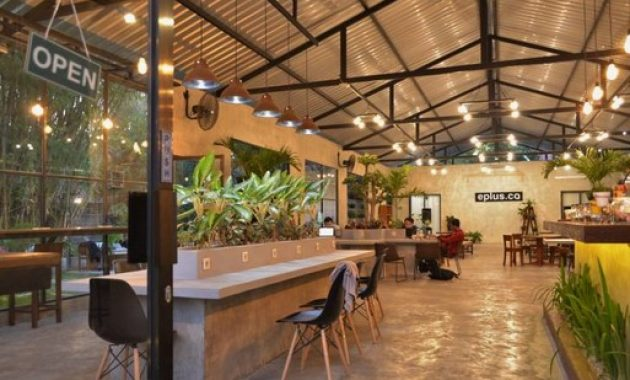
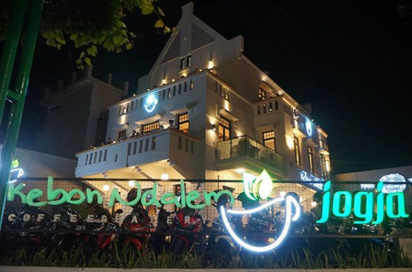
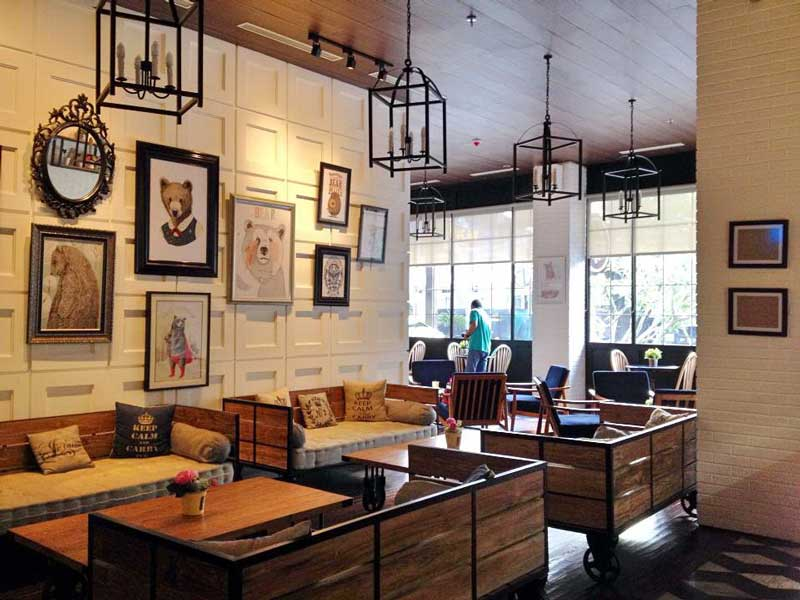

Eplusco
Lokasi : Jl. Candi Gebang, Jetis, Wedomartani, Kec. Ngemplak, Kabupaten Sleman, Daerah Istimewa Yogyakarta
Buka : 09.00 - 00.00 WIB
Maps
Filosofi Kopi
Lokasi : Jl. Pandhawa No.001/17, Tegal Rejo, Sariharjo, Kec. Ngaglik, Kabupaten Sleman, Daerah Istimewa Yogyakarta
Buka : 11.00 - 23.00 WIB
Maps

Kebon Ndalem
Lokasi : Jl. Pangeran Diponegoro No.2, Gowongan, Kec. Jetis, Kota Yogyakarta, Daerah Istimewa Yogyakarta
Buka : 10.00 - 00.00 WIB
Maps
Kopisini
Lokasi : Jl. Bunga, Ngebel, Tamantirto, Kec. Kasihan, Kabupaten Bantul, Daerah Istimewa Yogyakarta
Buka : 0.900 - 23.00 WIB
Maps
Loko
Lokasi : Jl. Ps. Kembang, Sosromenduran, Gedong Tengen, Kota Yogyakarta, Daerah Istimewa Yogyakarta
Buka : 08.00 - 00.00 WIB
Maps
Manhattan
Lokasi : Brajan, Tamantirto, Kec. Kasihan, Kabupaten Bantul, Daerah Istimewa Yogyakarta
Buka : 10.00 - 00.00 WIB
Maps

Roaster and Bear
Lokasi : Jl. P. Mangkubumi No.52, Gowongan, Kec. Jetis, Kota Yogyakarta, Daerah Istimewa Yogyakarta
Buka : 11.00 - 22.00 WIB
Maps
Sinergi
Lokasi : Jl Cendrawasih No.32 B, Demangan, Caturtunggal, Kec. Depok, Kabupaten Sleman, Daerah Istimewa Yogyakarta
Buka : 10.00 - 00.00 WIB
Maps
Tempo Gelato
Lokasi : Jl. Kaliurang No.KM.5 No.98, Kocoran, Sinduadi, Kec. Mlati, Kabupaten Sleman, Daerah Istimewa Yogyakarta
Buka : 09.00 - 22.00 WIB
Maps
The Canopy
Lokasi : Jl. Sukun Raya, Jaranan, Banguntapan, Kec. Banguntapan, Kabupaten Bantul, Daerah Istimewa Yogyakarta
Buka : 10.00 - 23.00 WIB
Maps
Unikologi
Lokasi : Gg. Argulo, Santren, Caturtunggal, Kec. Depok, Kabupaten Sleman, Daerah Istimewa Yogyakarta
Buka : 10.00 - 22.00 WIB
Maps